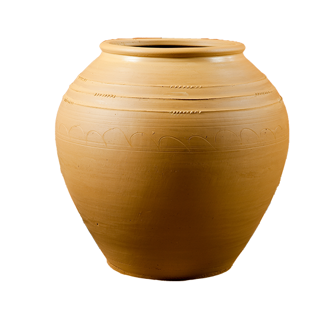

옹기장
독과 항아리를 만드는 기술

제작과정
옹기는 흙을 채취해서 가공한 후 원하는 형태로 성형하여 시유·건조하고, 가마에 쌓아서 불에 굽는 것으로 마무리된다. 이러한 전반적인 제작과정은 어느 지역이나 유사하지만 성형 기법에 있어서는 지역적 차이가 드러난다. 성형 기법은 옹기의 제작에 사용하는 흙을 가래떡 형태로 둥글게 만든 흙가래(질가래)를 쓰는가, 흙을 넓게 펴서 만든 타래미(질판)를 사용하는가에 따라서 구분된다.
연원
우리나라 옹기의 역사는 일찍이 선사시대부터 시작되었으나 옹기장에 관한 구체적인 내용은 조선시대를 중심으로 자세히 볼 수 있다. 조선 초기부터 옹기에 대한 수요가 높아 전국 각지에서 옹기를 생산하였다.
특징
현재까지 옹기장들은 점토의 종류와 배합, 형태를 만드는 성형 과정, 옹기를 구워 내는 소성 과정에 따라 각기 다른 전승 기술과 지식, 경험을 바탕으로 다양한 옹기들을 제작하고 있다.
전승자
| 보유구분 | 이름 | 성별 | 기예능 | 지역 | 인정일 |
|---|---|---|---|---|---|
| 보유자 | 김일만(金一萬) | 남 | 옹기제작 | 경기 | 2010-02-11 |
| 보유자 | 정윤석(鄭允石) | 남 | 옹기제작 | 전남 | 2010-02-11 |
소재지
기타